Every screen the app's browser tests reach, captured from main on 2026-11-27 at phone (390×844) and desktop (1280×800). The tests use a blank grey basemap and recorded data, so streets and live trains are missing; panels, sheets and buttons are exactly as the app draws them. Numbered points are defects found by eye against docs/DESIGN_RULES.md and against how Google Maps and Apple Maps handle the same moment. Cards without points were captured but not reviewed one by one; the five changes at the top apply to most of them.
Five changes that would fix the most screens
One small set of map buttons. Six or seven round buttons on every screen, plus a separate Map/3D/Street switch on desktop. Keep layers, the compass when turned and your location; move zoom to gestures and language and the recorder into the menu.
A peek that answers the question. Station, line, trip and bus sheets open on a title and a Minimize button; the next trains, total time or arrival come only after dragging. Put the one fact people came for in the peek, as Google and Apple Maps do.
Every answer draws itself on the map. Text answers and long walking answers leave the whole city on screen. Each answer should frame its place or route and offer one main action, like the restroom and exit answers already do.
Riders do not see developer tools. Playback speeds, step counters, the AI model switch, Download, recorder counters and raw server addresses sit on rider screens. Move them behind Advanced.
One layout for street level and inside stations. These screens drop the chat bar, add an arrow pad, a mini map with three buttons, level chips and keyboard hints on phones. Keep the chat bar, use drag to move, and show one control row.
Home and map 34
Following a bus
panel-slot.spec.ts · the follow mini map names the bus's next stop, never its stop id
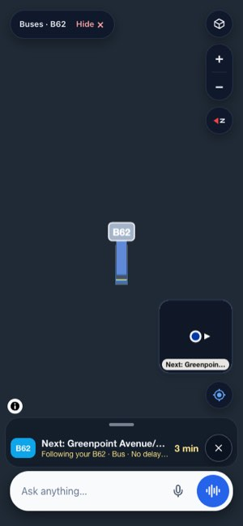
Phone
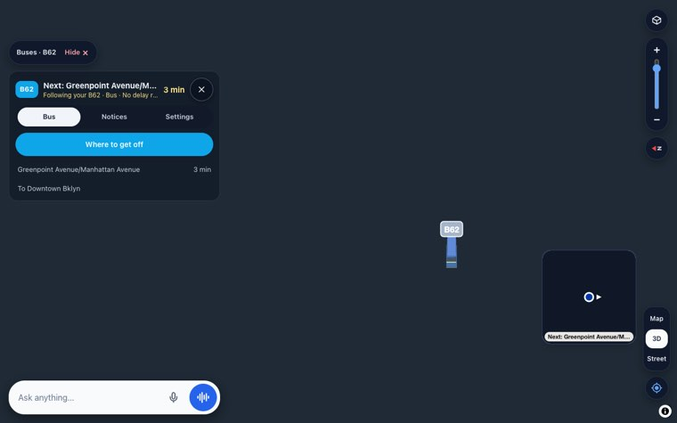
Desktop
Both lines of the card are cut off ("Next: Greenpoint Avenue/…", "Following your B62 · Bus · No delay…").
A mini map repeats the big map; "Buses · B62 Hide" chip at the top is a third place showing the same thing.
A trip card
responsive.spec.ts · a trip card
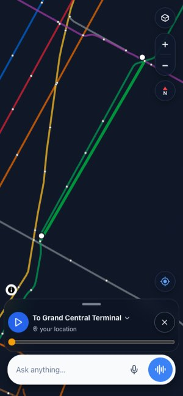
Phone
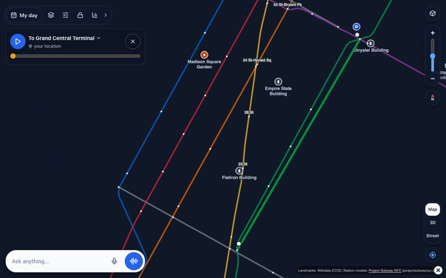
Desktop
"To Grand Central Terminal" with a play button and a progress bar, but no total time, no line, no leave-at time. Google and Apple Maps lead with those three.
A trip blocked by weekend work
responsive.spec.ts · a trip the weekend's changes block
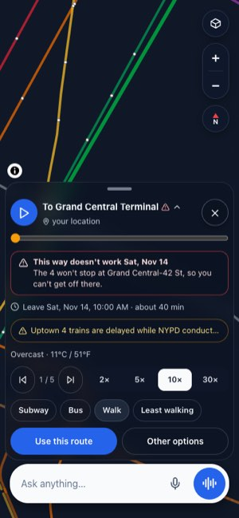
Phone
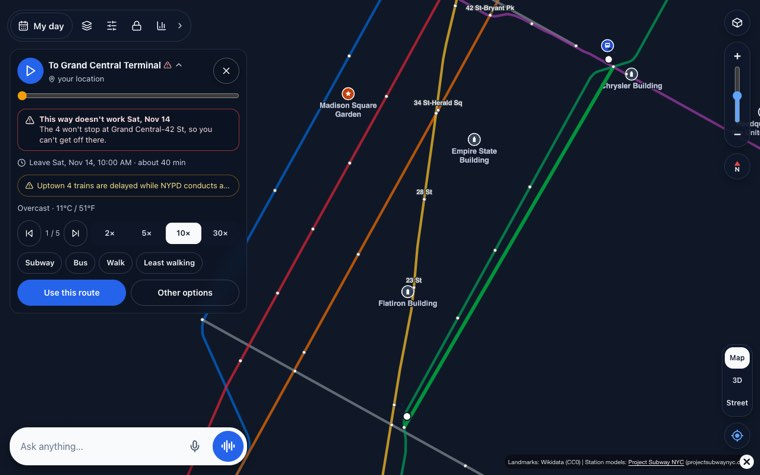
Desktop
Developer controls are on the rider screen: step 1/5 and playback speeds 2×, 5×, 10×, 30×.
One card stacks a warning, the leave time, a cut-off delay alert, the weather, playback, mode chips and two buttons. Apple Maps shows route options as a short list first, details on tap.
Desktop menus
zz-capture.spec.ts · desktop: each menu in the top-left row
Desktop
My day opens on "No usual line yet" and two folded sections, so a new rider sees an empty panel.
Layers repeats switches that are also in Settings.
Phone settings
zz-capture.spec.ts · phone: settings from behind the chat
Phone
The task-chip row is cut at both ends ("…n" at the left).
Where am I, inside Fulton St
responsive.spec.ts · the where-am-I questions inside Fulton St
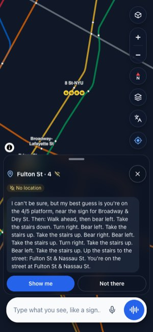
Phone
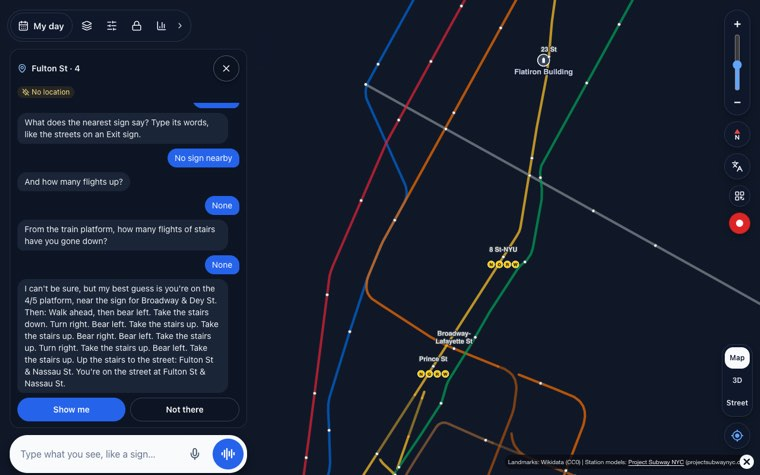
Desktop
The best guess is a paragraph of 13 turns ("Turn right. Bear left. Take the stairs up…"). Steps with icons, or one step at a time, would read faster.
Ask box placeholder changes to "Type what you see, like a sign…" with no other cue that the mode changed.
Home with lines drawn
responsive.spec.ts · home with the transit layers drawn
PhoneDesktop
With nothing asked, the map shows every subway line in the city at full strength. Google and Apple Maps start near you and keep transit lines quiet until you ask.
Six or seven round buttons stack down the right edge (3D, zoom in, zoom out, north, layers, language, sometimes the red record button). Google Maps and Apple Maps show two or three: layers, compass when turned, and your location.
A line panel
responsive.spec.ts · a line panel
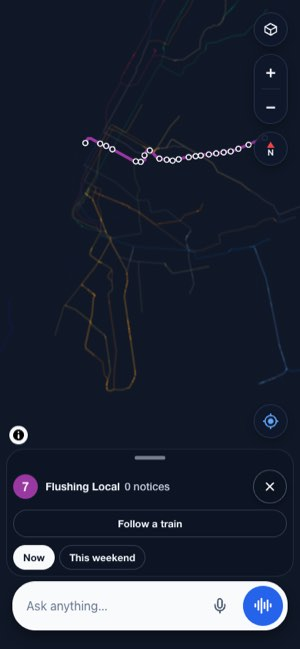
Phone
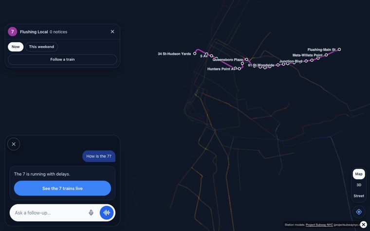
Desktop
Follow a train takes the top slot; notices sit below it.
Now and This weekend are being replaced by the four time buttons in docs/PLAN-notice-walks.md.
A station, then one of its lines
responsive.spec.ts · a station, one of its lines, and back
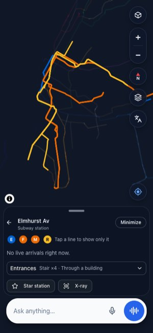
Phone
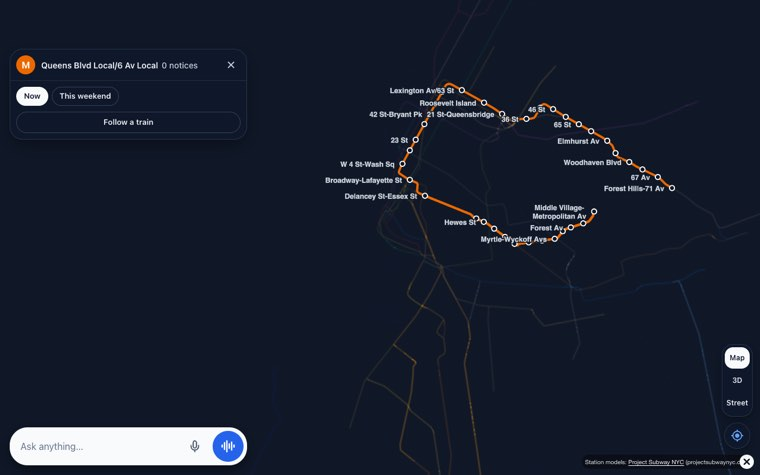
Desktop
The line name is cut off ("Queens Blvd Local/…") and "0 notices" breaks onto two lines.
Follow a train is a full-width button above the notices, so the first thing a rider sees is an action they rarely need.
Owner screenshot (live app): a tapped station opens as a peek that shows only "Fulton St, Subway station" and a Minimize button. Next trains and entrances appear only after dragging up, with a helper line "Only the G · tap it again for all lines". Google and Apple Maps put the next departures in the peek.
Home
responsive.spec.ts · home
PhoneDesktop
Six or seven round buttons stack down the right edge (3D, zoom in, zoom out, north, layers, language, sometimes the red record button). Google Maps and Apple Maps show two or three: layers, compass when turned, and your location.
An unlabelled red round button (the recorder) sits among the map controls and reads like a recording light.
The task buttons (Restroom, My train, Plan trip, Find exit) scroll sideways, so a cut-off chip pokes out at the right edge.
Desktop: eight controls down the right plus a credits bar along the bottom; Map, 3D and Street are a second view switch next to the 3D cube.
A text answer
responsive.spec.ts · a text answer
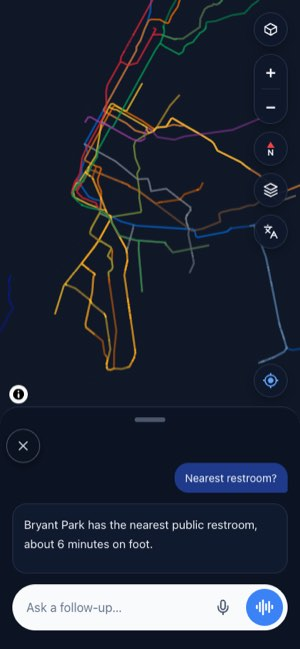
Phone
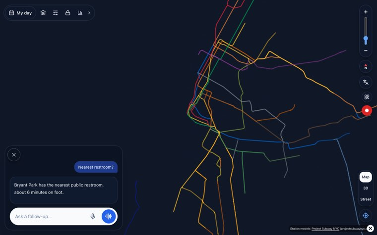
Desktop
"Nearest restroom?" answers in words only. The map stays zoomed out on the whole city, against the rule that an answer comes with a button that draws it on the map.
No "Walk me there" here, though the restroom answer below has one: the same question gives two different screens.
A restroom answer
responsive.spec.ts · a restroom answer keeps the restroom in view
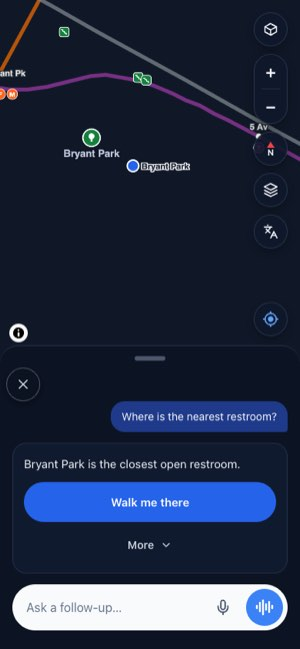
Phone
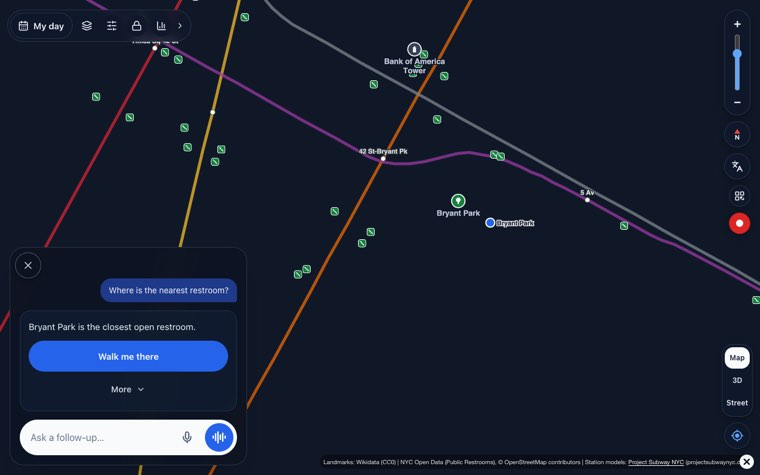
Desktop
Good pattern: one line, one main action, More behind a chevron, the place on the map. Use this as the model for other answers.
The restroom pin and the "Bryant Park" place label sit side by side with two different icons.
Settings
responsive.spec.ts · the model switch in Settings
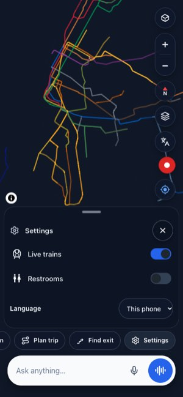
Phone
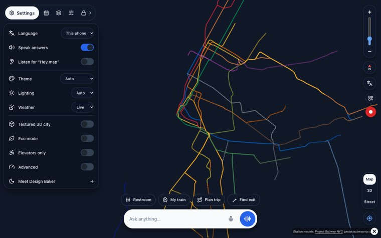
Desktop
Live trains and Restrooms are switches in both Layers and Settings; every control should live in one place.
"Model: Auto" (which AI model answers) is an internal setting shown to riders.
On a phone, Settings is the last chip of a sideways-scrolling row, so it is hard to find.
Walking inside Fulton St (3D)
responsive.spec.ts · walking inside Fulton St
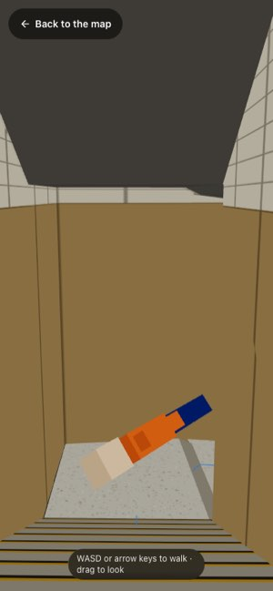
Phone
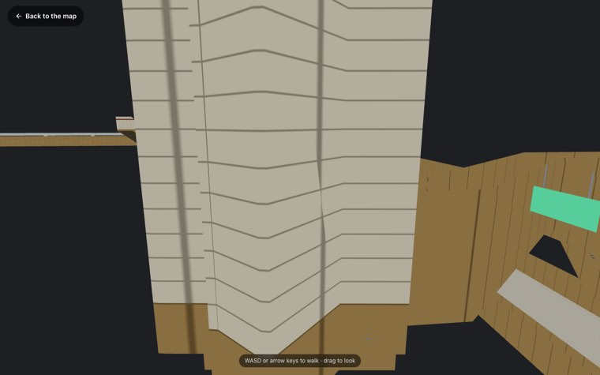
Desktop
A phone is told "WASD or arrow keys to walk · drag to look". Phones have no keys.
No chat bar and no map; the rule says the map stays visible.
Settings with more options
responsive.spec.ts · the QR panel offers more than a code
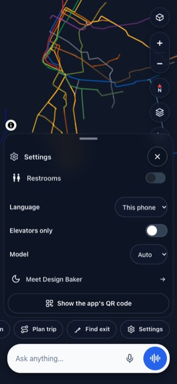
Phone
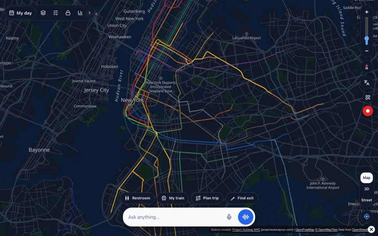
Desktop
Mixed row styles: switches, drop-downs, a link ("Meet Design Baker") and a full-width button in one list with no grouping.
Elevators only is a useful rider setting buried at the bottom.
street level mini map points to the nearest restroom and the card offers directions
minimap.spec.ts · street level mini map points to the nearest restroom and the card offers directions
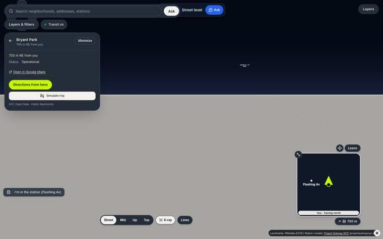
Desktop
Captured, not reviewed one by one.
a train trip walks to the station, then shows the train
responsive.spec.ts · a train trip walks to the station, then shows the train
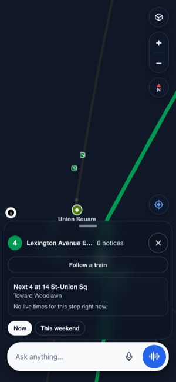
Phone
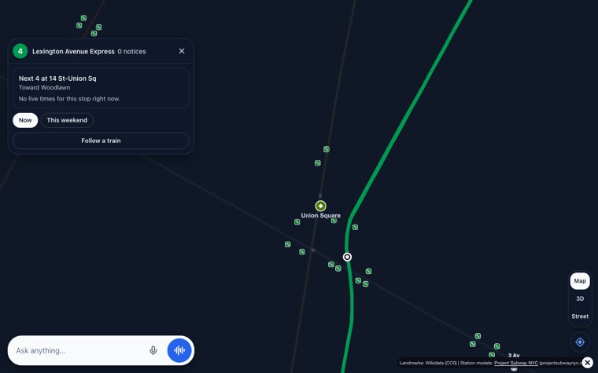
Desktop
Captured, not reviewed one by one.
a playing trip preview is one bar
responsive.spec.ts · a playing trip preview is one bar
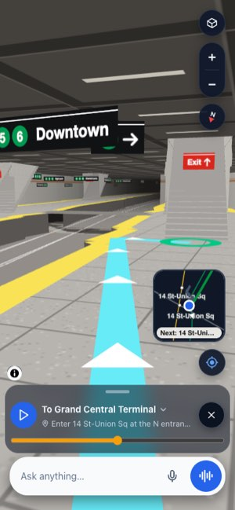
Phone
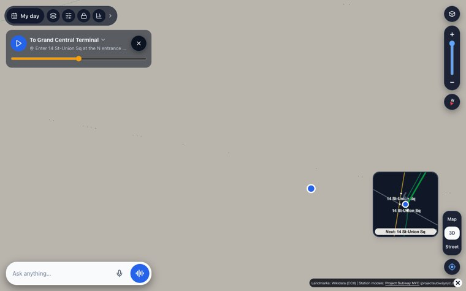
Desktop
Captured, not reviewed one by one.
the pretend trip shows you and the map follows at 390px
you-marker.spec.ts · the pretend trip shows you and the map follows at 390px
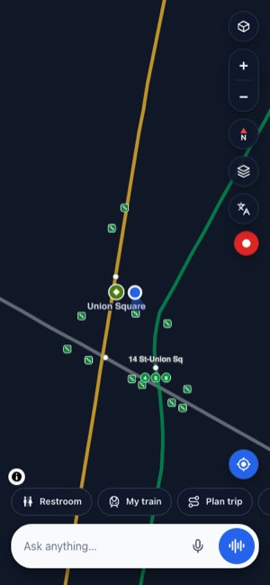
Phone
Captured, not reviewed one by one.
the pretend trip shows you and the map follows at 1280px
you-marker.spec.ts · the pretend trip shows you and the map follows at 1280px
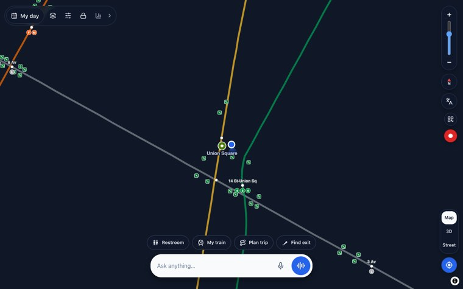
Desktop
Captured, not reviewed one by one.
another feature turning the map keeps following you
you-marker.spec.ts · another feature turning the map keeps following you
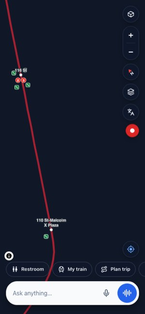
Phone
Captured, not reviewed one by one.
walking points a cone the way you go, sized by how sure it is
you-marker.spec.ts · walking points a cone the way you go, sized by how sure it is
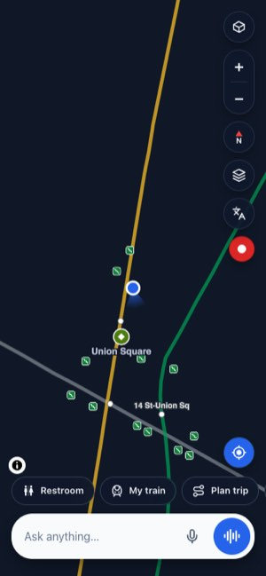
Phone
Captured, not reviewed one by one.
the station question goes away once the pretend ride carries you off
you-marker.spec.ts · the station question goes away once the pretend ride carries you off
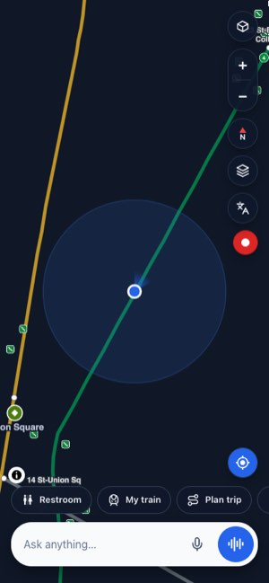
Phone
Captured, not reviewed one by one.
the map credits the station model's source
responsive.spec.ts · the map credits the station model's source
PhoneDesktop
Captured, not reviewed one by one.
the where-am-I helper, online and with no network
responsive.spec.ts · the where-am-I helper, online and with no network
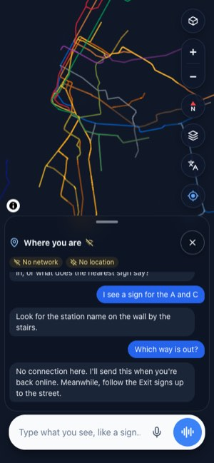
Phone
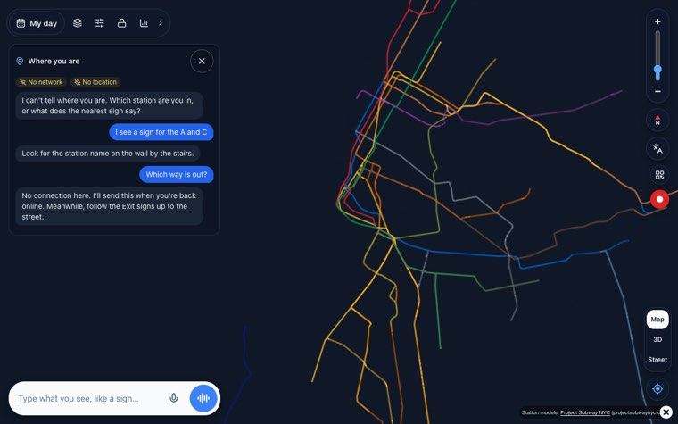
Desktop
Captured, not reviewed one by one.
Not quite inside Fulton St asks where you are
responsive.spec.ts · Not quite inside Fulton St asks where you are
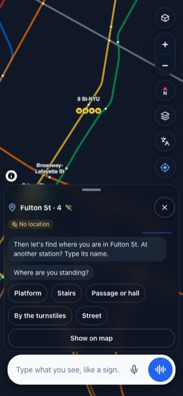
Phone
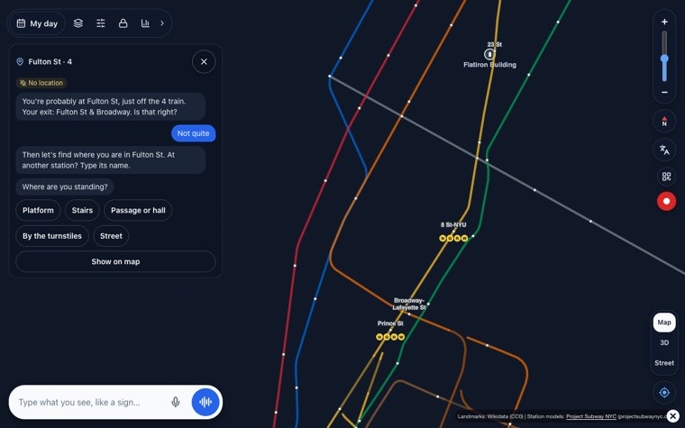
Desktop
Captured, not reviewed one by one.
home shows the red Record button inside the layout bar
responsive.spec.ts · home shows the red Record button inside the layout bar
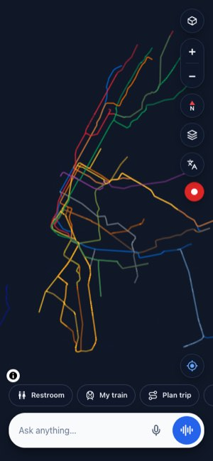
PhoneDesktop
Captured, not reviewed one by one.
home with the live trains moving
responsive.spec.ts · home with the live trains moving
Phone
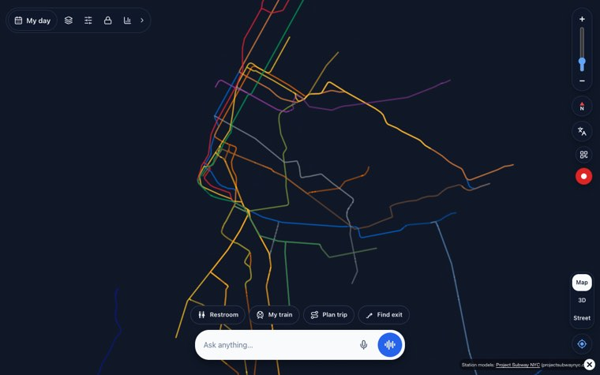
Desktop
Captured, not reviewed one by one.
an answer spells out station names
responsive.spec.ts · an answer spells out station names
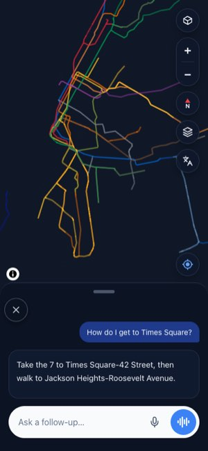
Phone
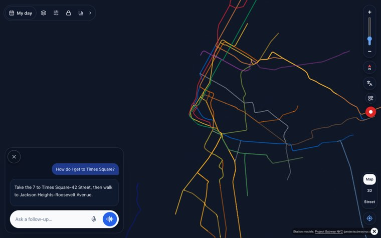
Desktop
Captured, not reviewed one by one.
a second quick question is held, then answered (no refusal)
responsive.spec.ts · a second quick question is held, then answered (no refusal)
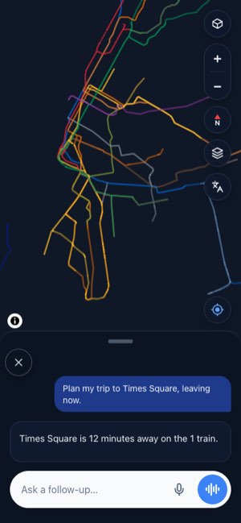
Phone
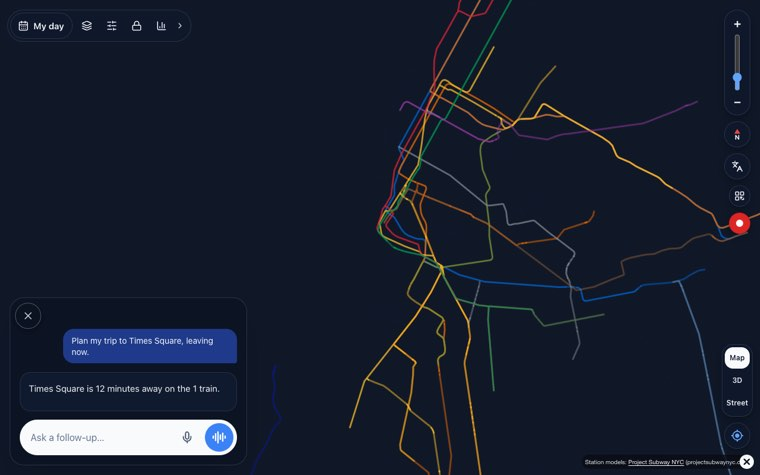
Desktop
Captured, not reviewed one by one.
the Elevators only switch in Settings
responsive.spec.ts · the Elevators only switch in Settings
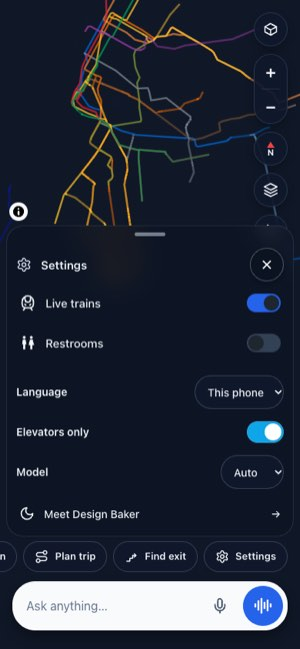
PhoneDesktop
Captured, not reviewed one by one.
the presentation link in Settings
responsive.spec.ts · the presentation link in Settings
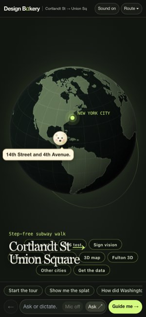
Phone
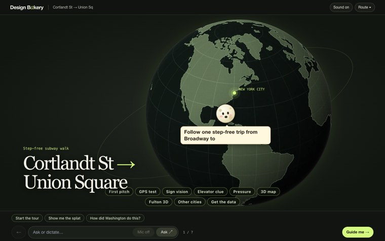
Desktop
Captured, not reviewed one by one.
changing the language
responsive.spec.ts · changing the language
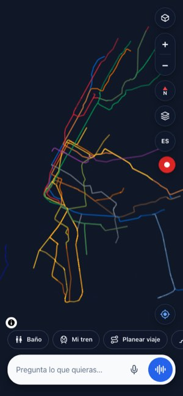
Phone
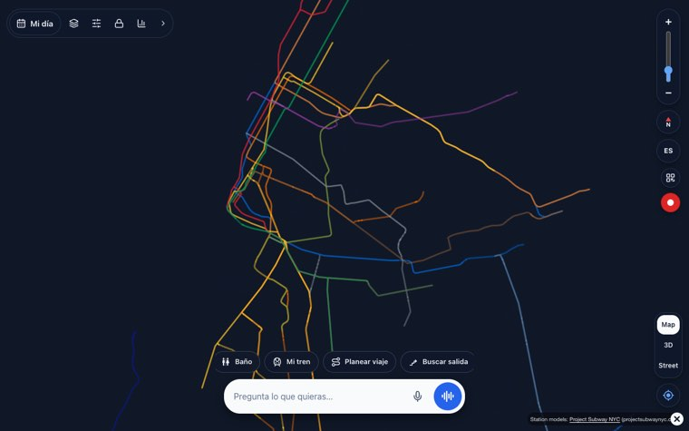
Desktop
Captured, not reviewed one by one.
the dollhouse view of a station walk
responsive.spec.ts · the dollhouse view of a station walk
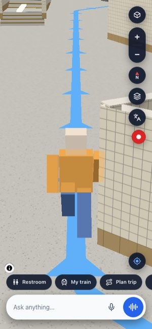
Phone
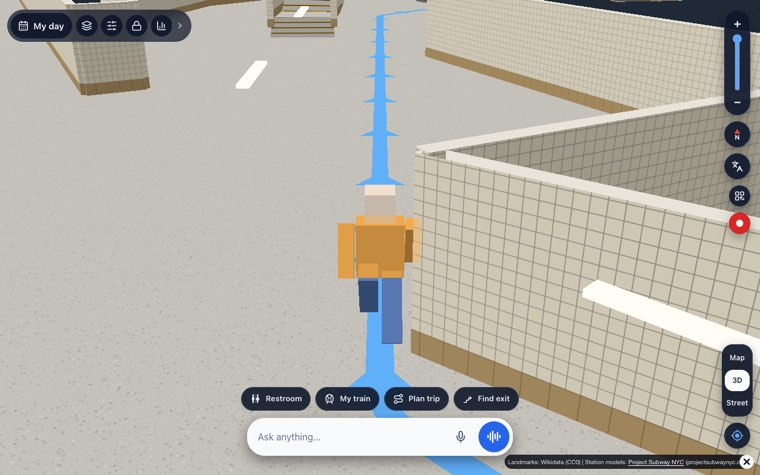
Desktop
Captured, not reviewed one by one.
Asking and answers 7
An exit answer
exit-answer.spec.ts · walking away from the place after an exit answer says to turn around
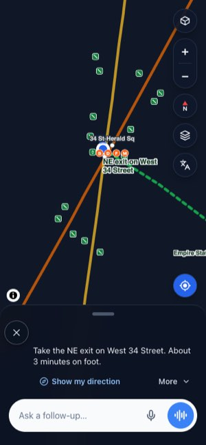
Phone
Good pattern: "Take the NE exit on West 34 Street. About 3 minutes on foot." with the exit on the map.
The exit label overlaps the station name and line bullets.
A long answer on a phone
one-sheet.spec.ts · a phone's answer pulls up for more and down for more map
Phone
A walking answer prints 14 steps as a wall of text and covers most of the map. The map shows every subway line instead of drawing the walk.
Google Maps shows steps as a list with icons and distances, and draws the route on the map.
the map's hands-free button takes a question directly at 390×844
hands-free.spec.ts · the map's hands-free button takes a question directly at 390×844
Phone
Captured, not reviewed one by one.
the map's hands-free button takes a question directly at 1280×800
hands-free.spec.ts · the map's hands-free button takes a question directly at 1280×800
Desktop
Captured, not reviewed one by one.
a wide screen puts the answer and the ask box in one left column
one-sheet.spec.ts · a wide screen puts the answer and the ask box in one left column
Desktop
Captured, not reviewed one by one.
a wide screen keeps status chips in one row at the top of the left side
one-sheet.spec.ts · a wide screen keeps status chips in one row at the top of the left side
Desktop
Captured, not reviewed one by one.
a minimized card on a wide screen waits in the chip row at the top left
one-sheet.spec.ts · a minimized card on a wide screen waits in the chip row at the top left
Desktop
Captured, not reviewed one by one.
Trips 3
A bus trip
trip-bus.spec.ts · a bus trip shows the stop, the bus pulling in and getting on at tall phone 390×844
Phone
The card says only "To Houston St" and the start; no bus number, arrival time or stops.
A mini map in the corner repeats what the big map already shows.
Wrong train
wrong-train.spec.ts · boarding the downtown 6 by mistake says to get off and cross over
Phone
Good: one sentence that says what to do. The big blue accuracy circle hides the station it names.
a bus trip shows the stop, the bus pulling in and getting on at desktop 1280×800
trip-bus.spec.ts · a bus trip shows the stop, the bus pulling in and getting on at desktop 1280×800
Desktop
Captured, not reviewed one by one.
Lines, notices and trains 20
Tracker health
tracker-health.spec.ts · tall phone 390×844 > tracker health shows coverage, the week grid, one line and accuracy, and keeps the layout
Phone
A technical dashboard, which the rules allow, but it prints raw server addresses ("GET /api/transit-health/coverage · loaded …").
A line with a shuttle notice
line-notices.spec.ts · the Lines list shows which lines are in trouble and each line's worst status at 390×844
Phone
The map labels for bus corners and stations overlap each other at the top of the stretch.
Covered by the notice walks plan; the preview in docs/design/notice-walks-preview.html is the agreed direction.
the chooser closes once the map moves the tapped spot off screen
line-chooser.spec.ts · the chooser closes once the map moves the tapped spot off screen
Phone
Captured, not reviewed one by one.
tall phone 390×844 > the accuracy panel says so when there is not enough data yet
tracker-health.spec.ts · tall phone 390×844 > the accuracy panel says so when there is not enough data yet
Phone
Captured, not reviewed one by one.
tall phone 390×844 > Settings links to tracker health only while Advanced is on
tracker-health.spec.ts · tall phone 390×844 > Settings links to tracker health only while Advanced is on
Phone
Captured, not reviewed one by one.
desktop 1280×800 > tracker health shows coverage, the week grid, one line and accuracy, and keeps the layout
tracker-health.spec.ts · desktop 1280×800 > tracker health shows coverage, the week grid, one line and accuracy, and keeps the layout
Desktop
Captured, not reviewed one by one.
desktop 1280×800 > the accuracy panel says so when there is not enough data yet
tracker-health.spec.ts · desktop 1280×800 > the accuracy panel says so when there is not enough data yet
Desktop
Captured, not reviewed one by one.
desktop 1280×800 > Settings links to tracker health only while Advanced is on
tracker-health.spec.ts · desktop 1280×800 > Settings links to tracker health only while Advanced is on
Desktop
Captured, not reviewed one by one.
a skip notice opens as a line diagram that walks its steps at 390×844
line-notices.spec.ts · a skip notice opens as a line diagram that walks its steps at 390×844
Phone
Captured, not reviewed one by one.
a skip notice opens as a line diagram that walks its steps at 1280×800
line-notices.spec.ts · a skip notice opens as a line diagram that walks its steps at 1280×800
Desktop
Captured, not reviewed one by one.
a notice that names its stations draws them and says which train, then why and when, at 390×844
line-notices.spec.ts · a notice that names its stations draws them and says which train, then why and when, at 390×844
Phone
Captured, not reviewed one by one.
a notice that names its stations draws them and says which train, then why and when, at 1280×800
line-notices.spec.ts · a notice that names its stations draws them and says which train, then why and when, at 1280×800
Desktop
Captured, not reviewed one by one.
a shuttle notice guides to the bus corner and the map follows at 390×844
line-notices.spec.ts · a shuttle notice guides to the bus corner and the map follows at 390×844
Phone
Captured, not reviewed one by one.
a shuttle notice guides to the bus corner and the map follows at 1280×800
line-notices.spec.ts · a shuttle notice guides to the bus corner and the map follows at 1280×800
Desktop
Captured, not reviewed one by one.
a notice is guided in the rider's language
line-notices.spec.ts · a notice is guided in the rider's language
Phone
Captured, not reviewed one by one.
the Lines list shows which lines are in trouble and each line's worst status at 1280×800
line-notices.spec.ts · the Lines list shows which lines are in trouble and each line's worst status at 1280×800
Desktop
Captured, not reviewed one by one.
the line panel shows this weekend's planned work at 375×667
line-notices.spec.ts · the line panel shows this weekend's planned work at 375×667
Phone
Captured, not reviewed one by one.
the line panel shows this weekend's planned work at 1280×800
line-notices.spec.ts · the line panel shows this weekend's planned work at 1280×800
Desktop
Captured, not reviewed one by one.
a desktop line card sits in the left column
line-notices.spec.ts · a desktop line card sits in the left column
Desktop
Captured, not reviewed one by one.
the old layout's Lines list opens the picked line from street view
line-notices.spec.ts · the old layout's Lines list opens the picked line from street view
Desktop
Captured, not reviewed one by one.
Stations, inside and street 17
Sign camera
sign-camera.spec.ts · the sign camera keeps the layout at tall phone 390×844
Phone
Says "Exit" three times: "YOU ARE NEAR Exit", "Exit", "THIS EXIT Exit", with uppercase eyebrows.
Start camera is the only clear action; the rest tells the rider nothing yet.
Walking into a station
station-walk.spec.ts · walking down into a station keeps the layout at tall phone 390×844
Phone
The top bar cuts the place name ("8 Spruce Street a…").
The six map buttons stay on screen underground, where zoom, north and layers do little.
An on-screen arrow pad is a desktop habit; phones expect drag to move.
Street level at a station stair
street-entry.spec.ts · tall phone: Street view at a Fulton St stair offers the walk inside
Phone
The arrow pad sits on top of the "← Map" button; the layout check did not catch it.
The chat bar is gone, against the rule that it is never hidden.
About a dozen controls at once: arrow pad, Layers, Walk inside, I'm in the station, Street/Mid/Up/Top, X-ray, Lines, mini map with move, expand and Leave.
A shop in street view
street-shops.spec.ts · street view: tapping a shop opens its card with its photo and map links (tall phone)
Phone
The card offers Photo and Google Maps but no hours, distance or what the place is.
Arrow pad, mini map, six map buttons and the card all on one screen.
Walk guide
walk-guide.spec.ts · the walk guide keeps the layout at tall phone 390×844
Phone
An eyebrow line ("SIMULATION · 14 ST-UNION SQ · STREET") and another ("THIS IS") above the content.
Six buttons in the card (Pause, Watch the filmed trip, Download, back, I'm at the next sign, Lost); Download and Watch the filmed trip are developer tools.
the sign camera keeps the layout at desktop 1280×800
sign-camera.spec.ts · the sign camera keeps the layout at desktop 1280×800
Desktop
Captured, not reviewed one by one.
Center on my location clears the sheet as it grows, before the next frame
sign-camera.spec.ts · Center on my location clears the sheet as it grows, before the next frame
Phone
Captured, not reviewed one by one.
the 3D preview keeps the layout at tall phone 390×844 and fills in as it plays
station-3d.spec.ts · the 3D preview keeps the layout at tall phone 390×844 and fills in as it plays
Phone
Captured, not reviewed one by one.
the sign camera speaks the app's language
sign-camera.spec.ts · the sign camera speaks the app's language
Phone
Captured, not reviewed one by one.
the 3D preview keeps the layout at desktop 1280×800 and fills in as it plays
station-3d.spec.ts · the 3D preview keeps the layout at desktop 1280×800 and fills in as it plays
Desktop
Captured, not reviewed one by one.
the station replay keeps the layout at tall phone 390×844
station-replay.spec.ts · the station replay keeps the layout at tall phone 390×844
Phone
Captured, not reviewed one by one.
the station replay keeps the layout at desktop 1280×800
station-replay.spec.ts · the station replay keeps the layout at desktop 1280×800
Desktop
Captured, not reviewed one by one.
the station replay keeps the layout at big screen 1920×1080
station-replay.spec.ts · the station replay keeps the layout at big screen 1920×1080
Desktop
Captured, not reviewed one by one.
desktop: Street view at a Fulton St stair offers the walk inside
street-entry.spec.ts · desktop: Street view at a Fulton St stair offers the walk inside
Desktop
Captured, not reviewed one by one.
street view: tapping a shop opens its card with its photo and map links (desktop)
street-shops.spec.ts · street view: tapping a shop opens its card with its photo and map links (desktop)
Desktop
Captured, not reviewed one by one.
street view opens with X-ray on and keeps the layout at 1280px
street-xray.spec.ts · street view opens with X-ray on and keeps the layout at 1280px
Desktop
Captured, not reviewed one by one.
the walk guide keeps the layout at desktop 1280×800
walk-guide.spec.ts · the walk guide keeps the layout at desktop 1280×800
Desktop
Captured, not reviewed one by one.
Recorder 4
Recorder review
record.spec.ts · the review draws the path from the location fixes
Phone
Black full screen with counters ("0 Motion, 0 Orientation, 3 Location, 0 Marks") and "No motion rows. Motion needs a phone." These are internals for contributors, fine behind Advanced, not for riders.
switch camera: a second camera can be chosen, and one camera shows no control
record-contribute.spec.ts · switch camera: a second camera can be chosen, and one camera shows no control
PhoneDesktop
Captured, not reviewed one by one.
send: the recording's data goes up first, the screen says it was sent, and a refusal keeps the recording
record-contribute.spec.ts · send: the recording's data goes up first, the screen says it was sent, and a refusal keeps the recording
PhoneDesktop
Captured, not reviewed one by one.
Send: the data goes up first, then the video in parts, and nothing at all before the button
record-send.spec.ts · Send: the data goes up first, then the video in parts, and nothing at all before the button
PhoneDesktop
Captured, not reviewed one by one.
Presenter 11
the splat scene fits the tall phone
presenter-camera.spec.ts · the splat scene fits the tall phone
Phone
Captured, not reviewed one by one.
the splat scene fits the desktop
presenter-camera.spec.ts · the splat scene fits the desktop
Desktop
Captured, not reviewed one by one.
the presenter fits the tall phone
presenter.spec.ts · the presenter fits the tall phone
Phone
Captured, not reviewed one by one.
Layout check found 1
phone: covered: button "The first pitch" — a tap on it lands on summary "Read Moon’s reply"
the presenter fits the desktop
presenter.spec.ts · the presenter fits the desktop
Desktop
Captured, not reviewed one by one.
Layout check found 1
desktop: covered: button "The first pitch" — a tap on it lands on summary "Read Moon’s reply"
the view choices sit on stage at the tall phone
presenter.spec.ts · the view choices sit on stage at the tall phone
Phone
Captured, not reviewed one by one.
the view choices sit on stage at the desktop
presenter.spec.ts · the view choices sit on stage at the desktop
Desktop
Captured, not reviewed one by one.
the Build with us invitation fits the tall phone
presenter.spec.ts · the Build with us invitation fits the tall phone
Phone
Captured, not reviewed one by one.
the Build with us invitation fits the desktop
presenter.spec.ts · the Build with us invitation fits the desktop
Desktop
Captured, not reviewed one by one.
the walk ends with the invitation at the tall phone
presenter.spec.ts · the walk ends with the invitation at the tall phone
Phone
Captured, not reviewed one by one.
the walk ends with the invitation at the desktop
presenter.spec.ts · the walk ends with the invitation at the desktop
Desktop
Captured, not reviewed one by one.
the opening screen offers the tech story in one tap
presenter.spec.ts · the opening screen offers the tech story in one tap
Phone
Captured, not reviewed one by one.
Other 8
a card opened over a trip preview is not covered by it
task-screens.spec.ts · a card opened over a trip preview is not covered by it
Desktop
Captured, not reviewed one by one.
closing a restroom answer takes its restrooms off the map
task-screens.spec.ts · closing a restroom answer takes its restrooms off the map
Phone
Captured, not reviewed one by one.
a restroom answer's map button leaves restrooms off once the answer closes
task-screens.spec.ts · a restroom answer's map button leaves restrooms off once the answer closes
Phone
Captured, not reviewed one by one.
asking in street view keeps the camera at eye level
task-screens.spec.ts · asking in street view keeps the camera at eye level
Desktop
Captured, not reviewed one by one.
a question from the ask box in street view is asked from the street spot
task-screens.spec.ts · a question from the ask box in street view is asked from the street spot
Desktop
Captured, not reviewed one by one.
street view draws station markers only near you
task-screens.spec.ts · street view draws station markers only near you
Desktop
Captured, not reviewed one by one.
a restroom answer in street view on a tablet keeps the camera, pad and mini map in place
task-screens.spec.ts · a restroom answer in street view on a tablet keeps the camera, pad and mini map in place
Desktop
Captured, not reviewed one by one.
trip preview keeps chat clear at 1280px and starts only on Play
task-screens.spec.ts · trip preview keeps chat clear at 1280px and starts only on Play